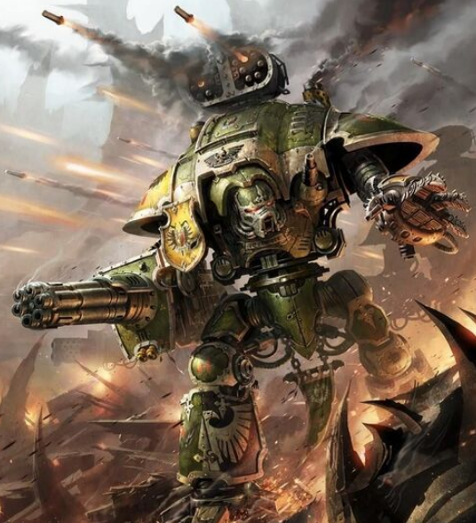

Dossier Noblesse Mécanisée 901.M41
Les Chevaliers Impériaux ne sont pas des machines anonymes. Ce sont des lignées. Des héritages. Des armes transmises de génération en génération.
Chaque Chevalier est piloté par un noble, issu d’une maison liée par serment à l’Imperium ou à l’Adeptus Mechanicus.

RÔLE SUR LE CHAMP DE BATAILLE
Leur origine remonte à des mondes isolés, où les colons durent survivre dans des environnements hostiles grâce à ces machines de guerre.
Au fil du temps, ces machines devinrent des symboles de pouvoir. Puis des reliques. Puis des trônes de guerre.
Le lien entre le pilote et son Chevalier est profond. L’interface neurale ne transmet pas seulement des commandes. Elle transmet une mémoire. Des émotions. Des traces des anciens porteurs.
Chaque nouveau pilote hérite d’une partie de ceux qui l’ont précédé.
DOGME ET DISCIPLINE
Sur le champ de bataille, les Chevaliers sont des unités lourdes, capables de détruire véhicules, fortifications et formations entières.
Moins massifs que les Titans, mais plus nombreux, ils comblent l’écart entre la machine de guerre et l’armée.
Leur présence est autant symbolique que militaire. Ils incarnent l’honneur, le devoir et la tradition.
Mais cet honneur a ses failles.
HÉRITAGE DE GUERRE
Les rivalités entre maisons sont fréquentes. Les serments peuvent entrer en conflit. Les décisions ne sont pas toujours dictées par la stratégie.
Certains Chevaliers tombent. Corruption. Trahison. Isolement.
Lorsqu’un Chevalier est perdu, ce n’est pas seulement une machine qui disparaît. C’est une lignée entière qui est brisée.
Il faut comprendre ceci. Les Chevaliers Impériaux ne combattent pas seulement pour l’Imperium.
Ils combattent pour leur nom.
Et pour certains, l’honneur d’un nom vaut plus que la victoire elle-même.
Fin de l’extrait. Toute Maison de Chevaliers doit être évaluée selon sa loyauté et sa stabilité. Risque de divergence interne élevé.